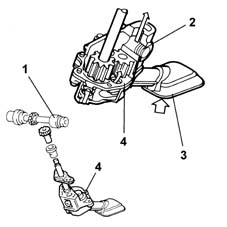
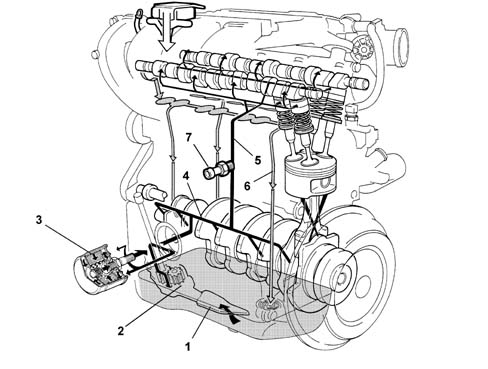

1084B engine oil lubrication circuit
- Path
- Descriptions > 10 ENGINE UNIT > 1084 ENGINE LUBRICATION SYSTEM > 1084B engine oil lubrication circuit
- Kind
- system description
- Applies to
- engines: 1.6 16v; all production periods
- Interactive page
- https://sloeber94.github.io/elrnDB-fMltpl/en/#/2888236
Applies to: engines: 1.6 16v; all production periods
The engine lubricatio system is pressurized by a geared pump fixed to the crankcase. The pump is operated by the gear through the auxiliary shaft. A restricter valve controls the system pressure. During the intake, the oil is filtered through a gauze filter in the inlet casing and then through a replacable filter element, in the fuel line.

1, Auxiliary shaft 2, Restricter valve 3, Gauze filter 4, Pump casing
A longitudinal centre duct for the oil in the crankcase allows the lubrication of the crankshaft, the pistons and the connecting rods.
Another two ducts allow the lubricatio of the cylinder head and all the engine timing system components.
A vapour recirculation and separation system allows the recovery of the oil vapours from the crankcase.
The oil filler cap is located on a pipe outside the engine, fixed by means of a bracket to the inlet manifold.

1, Suction pipe with filter mesh 2, Oil pump 3, Oil filter cartridge 4, Main longitudinal duct 5, Camshaft bearings vertical duct 6, Oil return to the sump 7, Engine oil pressure warning light switch